Objective 10:
Final Scene
For my final scene, I modeled the meshes in Maya, a world-renowned 3D Modeling, Animation, Rendering, and Dynamics package. After modeling the meshes (Coke can and glasses in NURBS, table and picture frame in Polygons), I tessellated the meshes if necessary, and exported them with vertex normal and UV texture coordinate information to separate OBJ files. These OBJ files were then imported into my Raytracer. The final scene (no anti-aliasing) rendered in 25 minutes on gl22.student.cs with all of my optimizations. Since I had so much glass and fine detail, the Adaptive Anti-Aliasing code determined that approximately 51% of the image required Anti-Aliasing. With Anti-Aliasing, the Final Scene rendered in approximately 9 hours on gl22.student.cs. 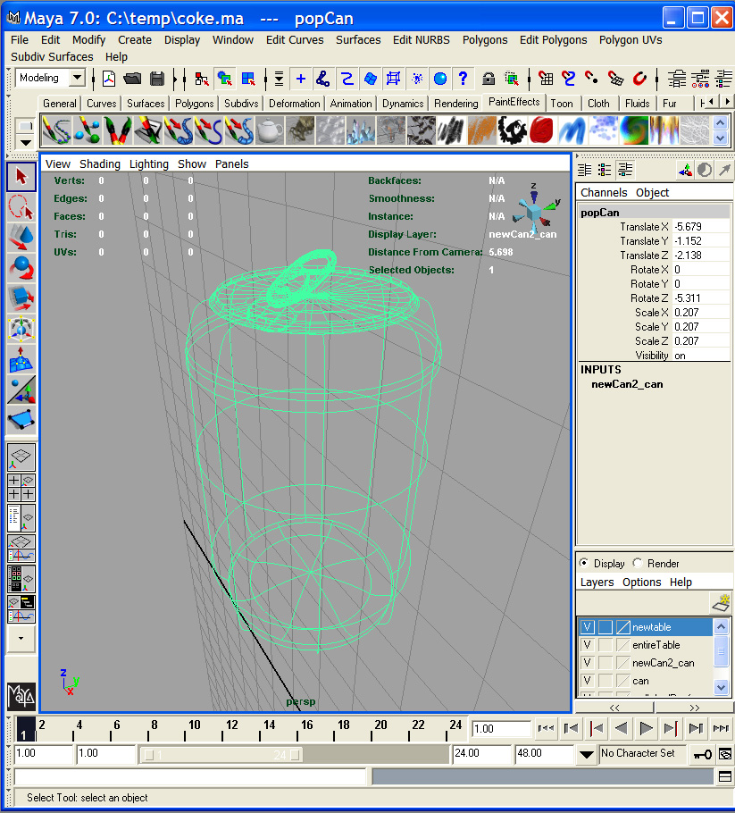 Coke can modeled in NURBS in Maya 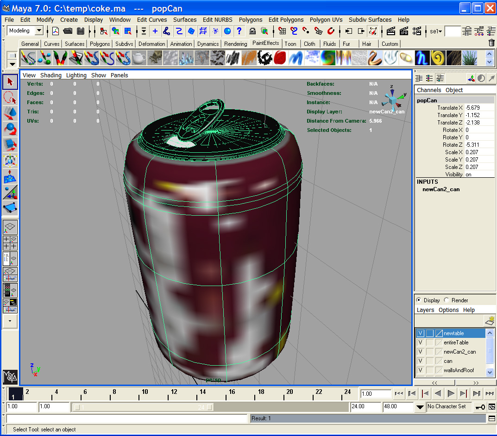 Coke can UV Mapped in Maya 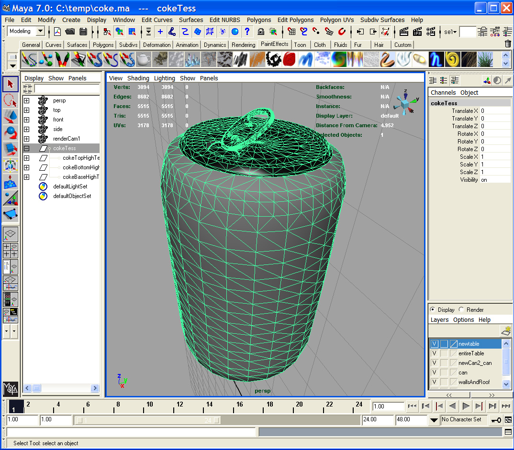 Coke can tessellated in Maya - converted from NURBS to Polygons for importing into my Raytracer 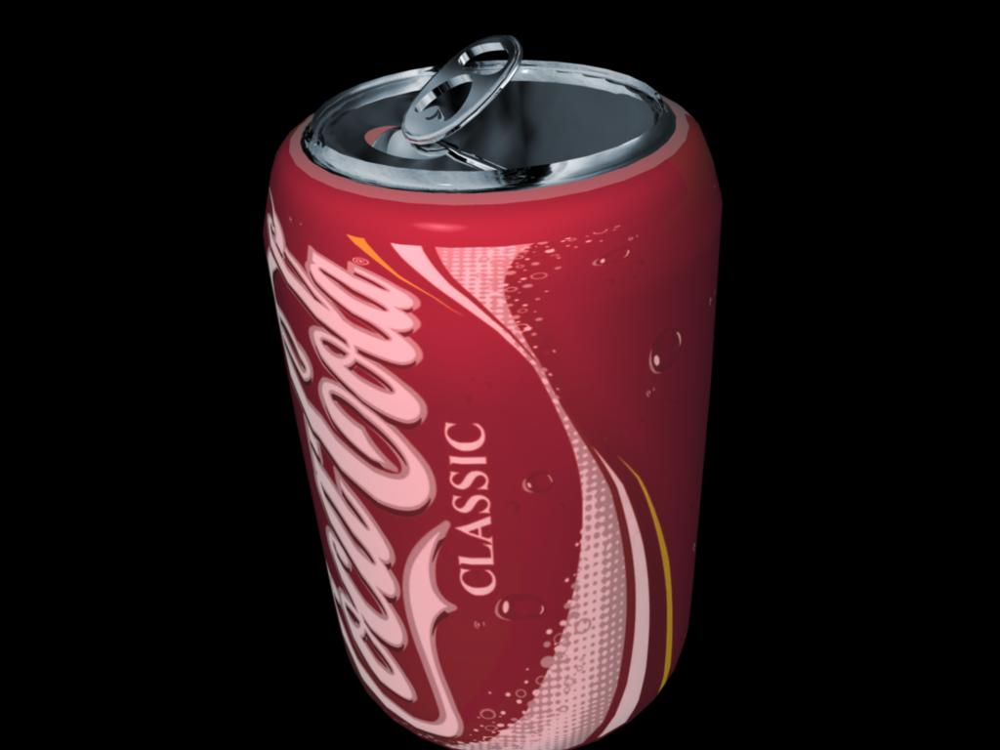 Rendering of Coke Can in Maya (one day I hope my own Raytracer will look this good!!) :) 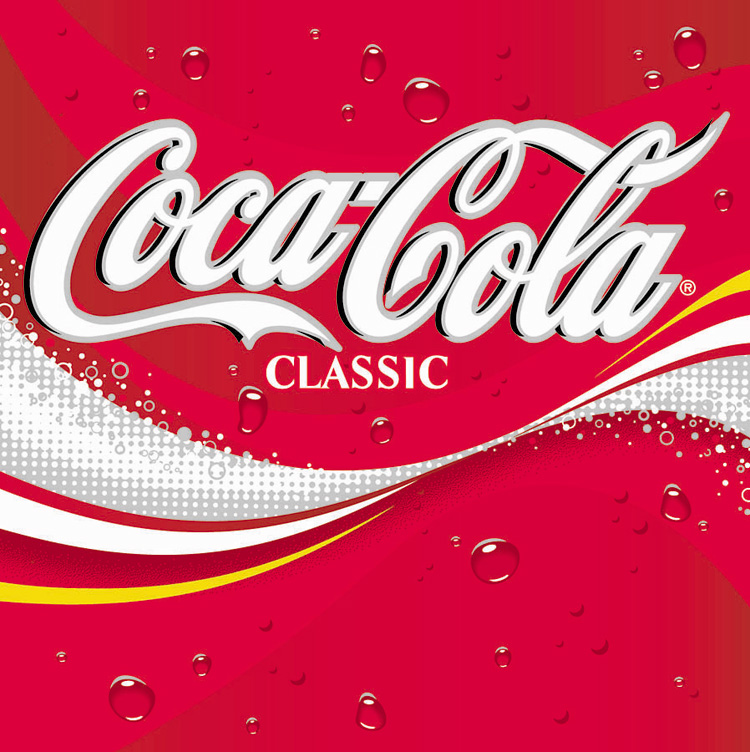 Coke logo used for Texture Mapping 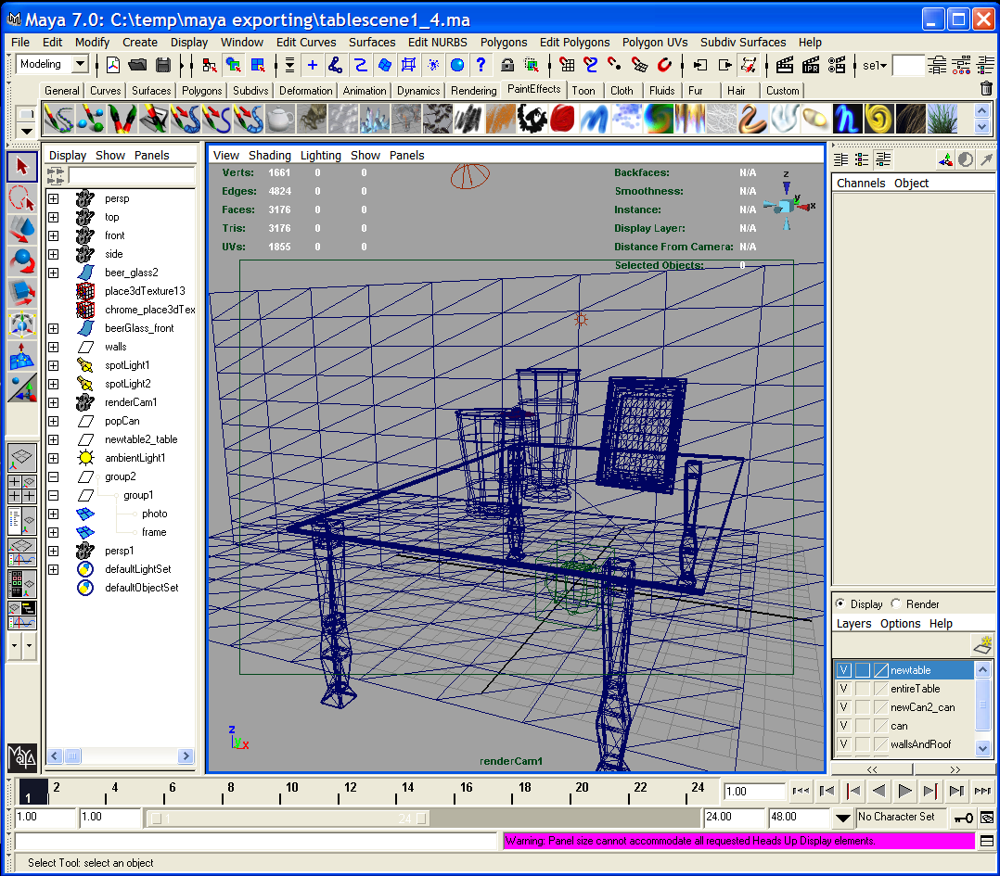 Final Scene setup in Maya 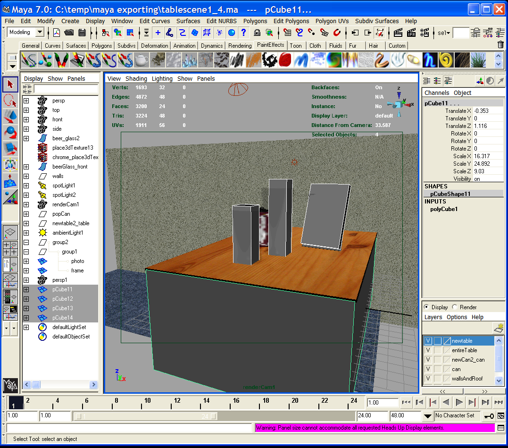 Bounding Box version of my Scene created in Maya for quick rendering and camera placement in my Raytracer 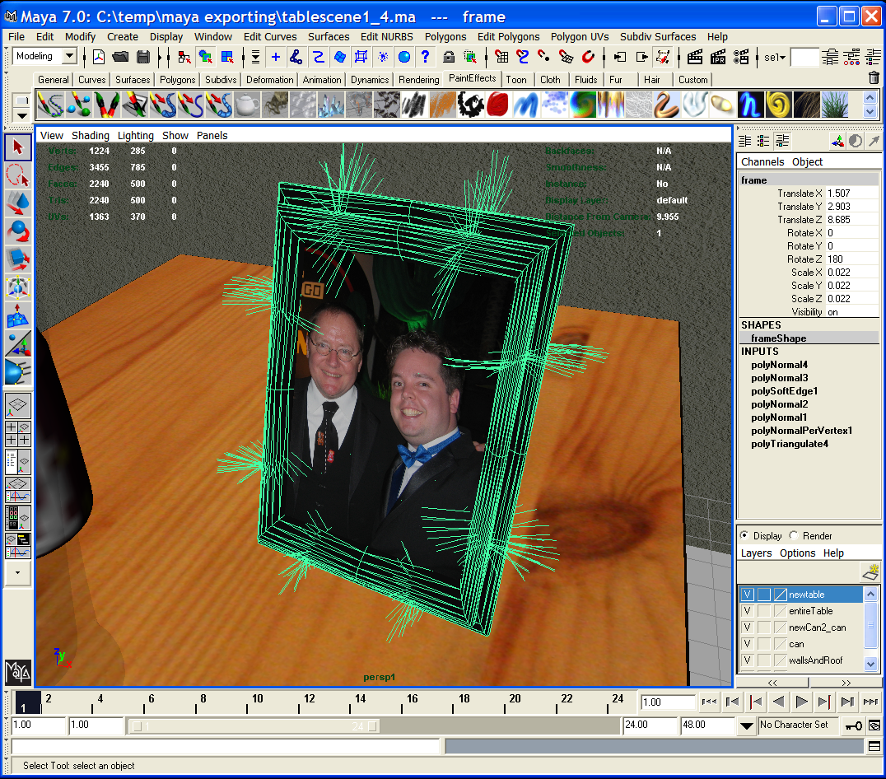 Correcting Normals for objects in Maya so vertex normal interpolation on my Raytracer works as expected 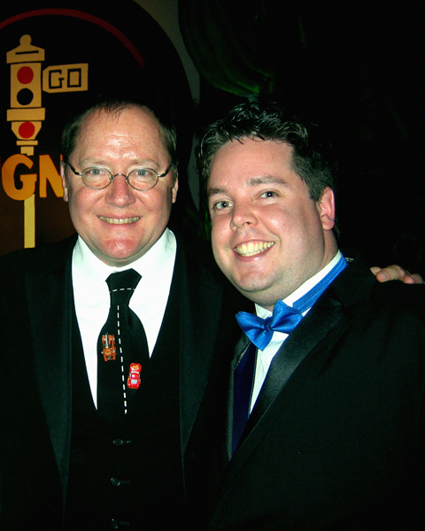 Me and the legend of Computer Animation himself, John Lasseter 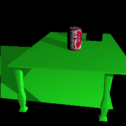 Scene placement in my Raytracer 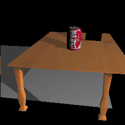 Starting to add textures in my Raytracer 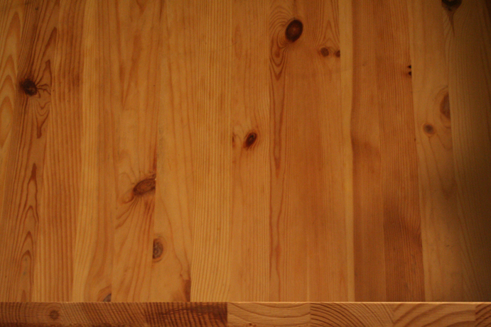 A photo of my living room coffee table! Also the edge of the table is here too. This was UV Mapped in Maya onto the table that I created, and then texture mapped in my Raytracer. 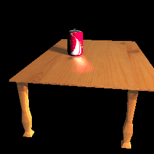 Test image of the table with glossy reflections 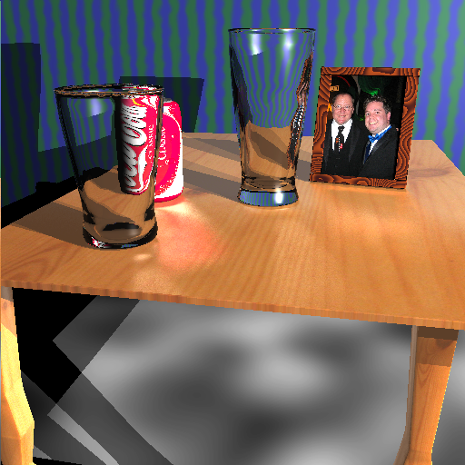 Final scene with NO anti-aliasing, rendered in 24 minutes on gl22.student.cs. 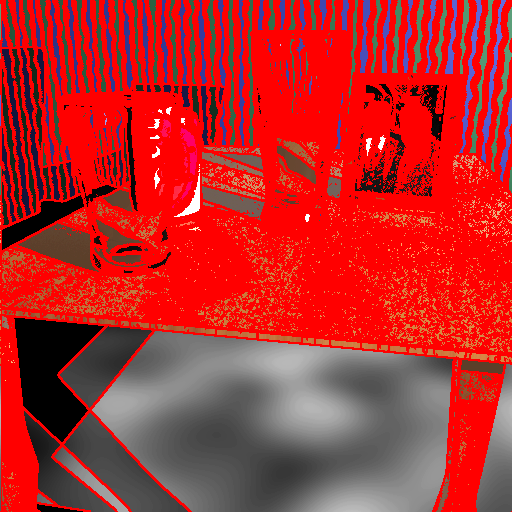 Final scene Marked for Anti-Aliasing
And finally... what we've all been waiting for... My Final Scene! 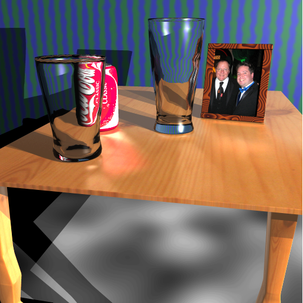
|
Written by: Mike Jutan
CS 488 - Computer Graphics
University of Waterloo